The application is a Calculator REST API written in Java 21 with Spring Boot 3.5 and built with Maven.
It exposes add, subtract, multiply and divide under
/api/v1, and a Spring Actuator health probe at /actuator/health. Operands are
handled as BigDecimal, so decimal arithmetic is exact (0.1 + 0.2 = 0.3). Every client error
(division by zero, a missing or non-numeric parameter, an out-of-range operand) returns HTTP 400 with the
same JSON body: timestamp, status, error, message, path.
Around the application sits a pipeline that needs no manual steps. A push to main on GitHub is
picked up by Jenkins, which builds, tests and packages the code, builds a Docker image tagged with the build
number, pushes it to Docker Hub and redeploys the Docker Compose stack. Jenkins then checks the stack's
health and emails the result.
Figure 1: Pipeline and runtime architecture.
| Stage | What it does | Build #1 |
|---|---|---|
| Checkout | checkout scm fetches the commit that triggered the build. The job polls GitHub every minute (pollSCM), and a githubPush() trigger is also declared for a webhook. | 2.0 s |
| Build | ./mvnw -B clean package -DskipTests compiles the code into an executable JAR, which is archived and fingerprinted. The Maven wrapper means Jenkins needs no Maven install of its own. | 11 s |
| Test | ./mvnw -B test runs 33 JUnit 5 tests: unit tests for every operation including divide by zero, and @SpringBootTest + MockMvc integration tests for each endpoint, each error case and the health check. Surefire XML is published with junit. A failing test makes Maven exit non-zero, which fails the build. | 7.3 s |
| Docker Build | Builds vortexfrenzy/calculator-devops:<BUILD_NUMBER> and :latest from the multi-stage Dockerfile. | 15 s |
| Push | withCredentials binds the Docker Hub username and access token from the Jenkins credential store (ID dockerhub-credentials). Login uses --password-stdin, both tags are pushed and docker logout always runs afterwards. Nothing secret is in the repository. | 1 min 8 s |
| Deploy | docker compose up -d --no-build --remove-orphans --wait rolls the stack to the new tag and blocks until every container is healthy. A smoke test then calls /actuator/health and /api/v1/add through Nginx. If deployment fails, docker compose ps and the container logs are printed. | 20 s |
| Post | Prunes all but the last 5 numbered image tags and dangling layers, then emailext emails the result (SUCCESS or FAILURE) with links to the console and test report. Email goes through Gmail SMTP using credentials stored in Jenkins. | 6.2 s |
Re-runnable and idempotent. disableConcurrentBuilds() stops two deploys from racing.
Compose recreates only the containers whose image or configuration changed, so re-running a build leaves a
healthy deployment as it is; a second up with the same tag recreated nothing.
maven:3.9.11-eclipse-temurin-21) copies
pom.xml and runs dependency:go-offline before copying src/, so the
dependency layer stays cached until the POM changes. The runtime stage (eclipse-temurin:21-jre-alpine)
copies only the JAR, runs as the non-root user spring, declares EXPOSE 8080 and has a
HEALTHCHECK. A .dockerignore keeps target/, .git/ and IDE files out of the build context.calculator replicas (health check on /actuator/health,
restart: unless-stopped, environment variables SERVER_PORT, APP_VERSION, JAVA_OPTS)
sit on an internal backend network. An nginx reverse proxy, which waits for the API to be healthy
and has its own health check, is the only service on the frontend network and publishes host port 8081.
One docker compose up starts the whole stack.feature/calculator-api, feature/containerization
and feature/jenkins-pipeline, each merged into main with a merge commit. A .gitignore covers
Maven, IDE files and secrets.proxy_pass with a variable and
Docker's DNS resolver. Nginx resolved the service name once per DNS TTL and kept using the first address, so the
X-Upstream-Server header never changed. I switched to an upstream block with a shared-memory
zone and server calculator:8080 resolve (available in open-source Nginx 1.27.3 and later). Requests now
alternate between both replicas, and Nginx picks up new IPs when Compose recreates the containers..env./usr/local/bin. The Jenkinsfile prepends it in its environment block, and the
Maven wrapper avoids needing a Jenkins-managed Maven install.localhost, so GitHub can't deliver a webhook to it
without a tunnel such as ngrok. The job polls GitHub every minute instead, which the brief accepts. The
githubPush() trigger is still declared, so adding a tunnel and a webhook would make builds start instantly.dockerhub-credentials. A pasted
invisible leading space was the cause; retyping the ID fixed it.BigDecimal.stripTrailingZeros() serialised 10 as 1E+1, which
spring.jackson.generator.write-bigdecimal-as-plain=true fixed. Inputs like 1e999999999 could force huge
computations, so operands are limited to 50 significant digits and an exponent within ±1000, with a 400 response outside that.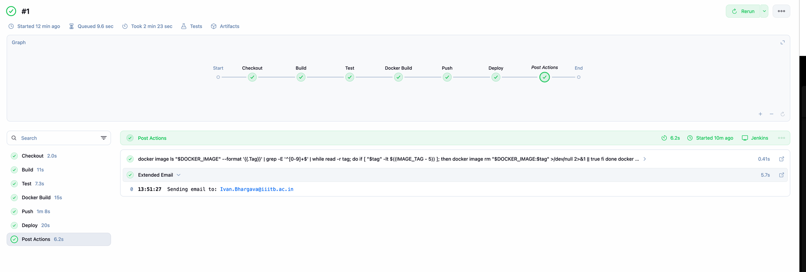
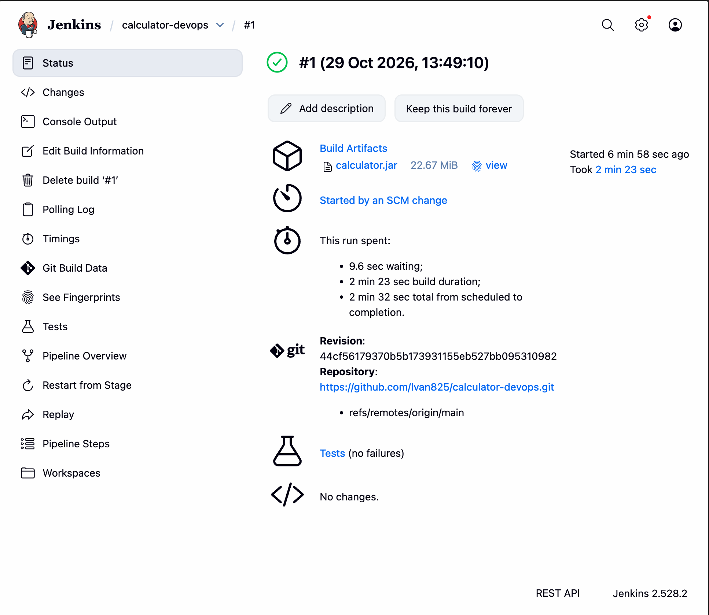
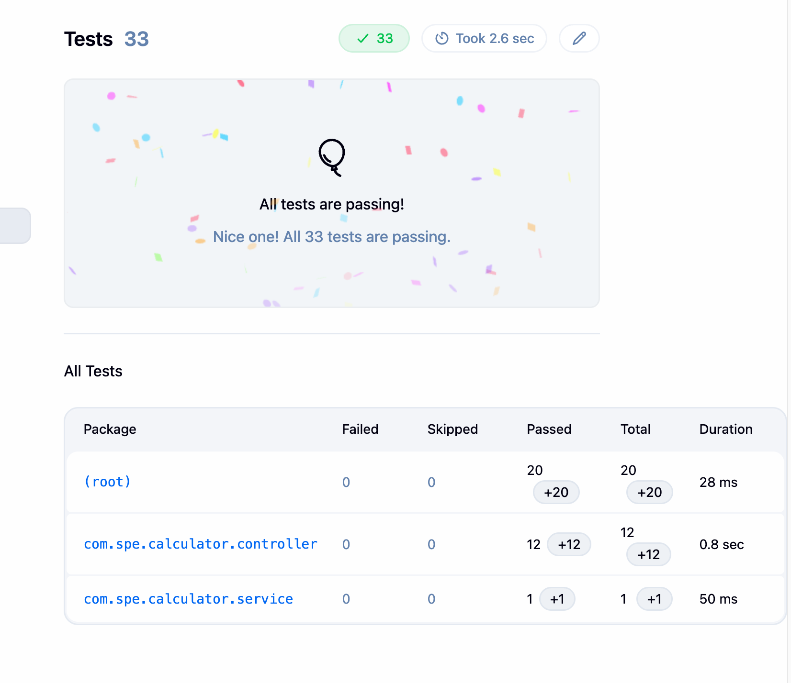
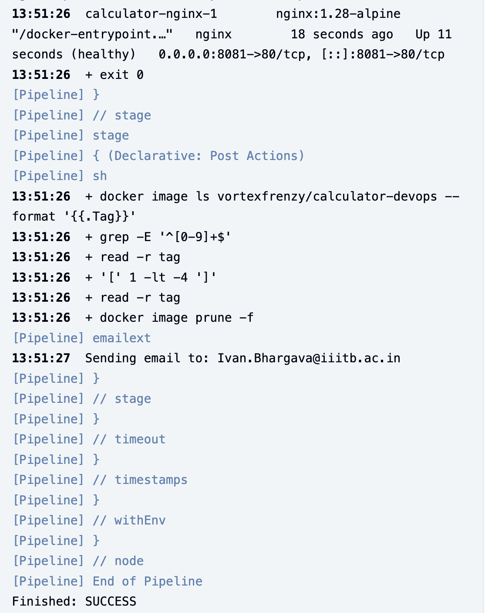
Finished: SUCCESS.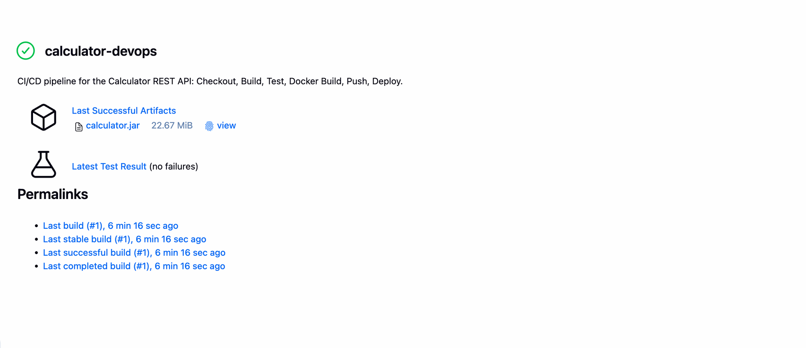
calculator.jar, latest test result.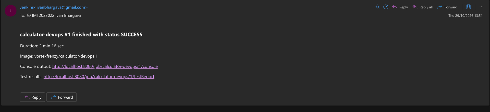
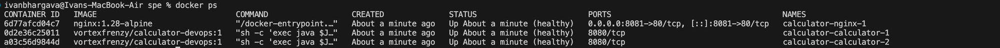
docker ps: Nginx on 0.0.0.0:8081 and two healthy calculator replicas running image tag :1.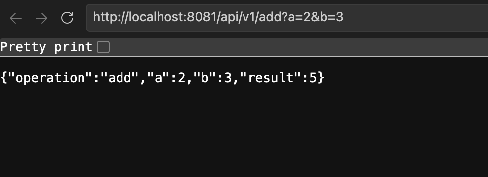
/api/v1/add?a=2&b=3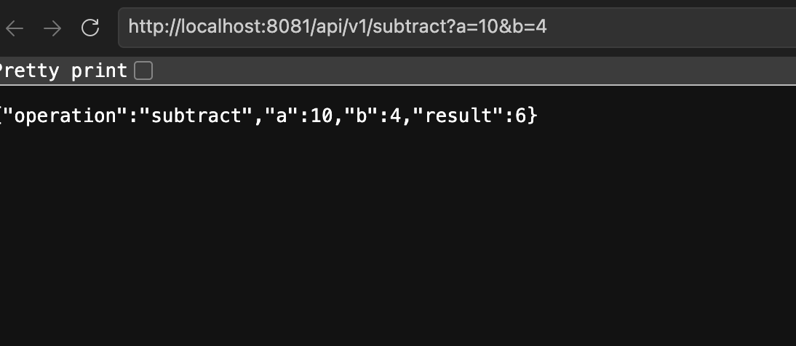
/api/v1/subtract?a=10&b=4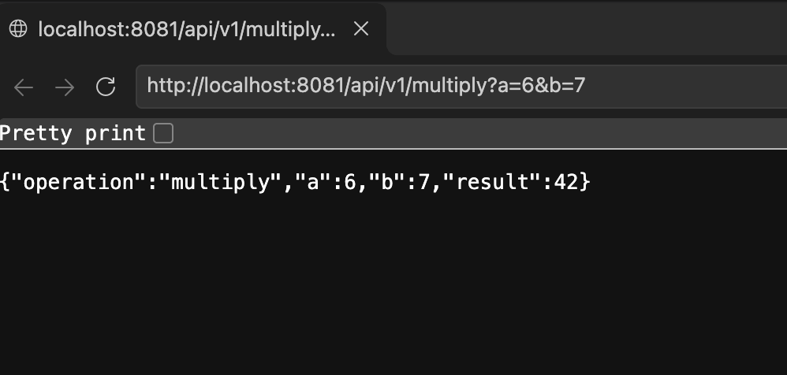
/api/v1/multiply?a=6&b=7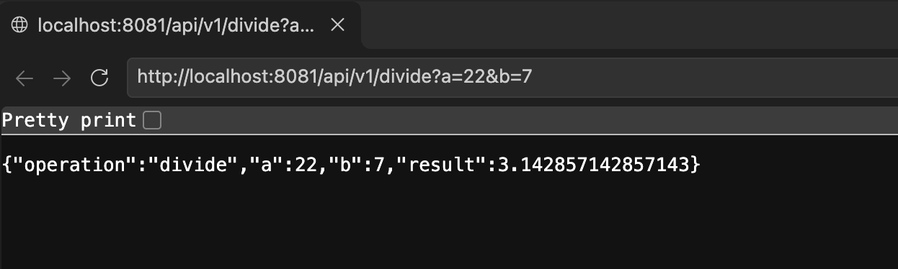
/api/v1/divide?a=22&b=7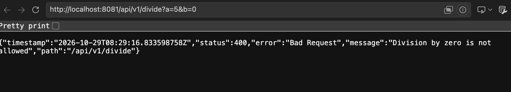
/api/v1/divide?a=5&b=0 returns HTTP 400 with error JSON.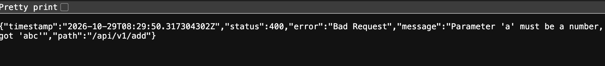
/api/v1/add?a=abc&b=2 returns HTTP 400 for non-numeric input.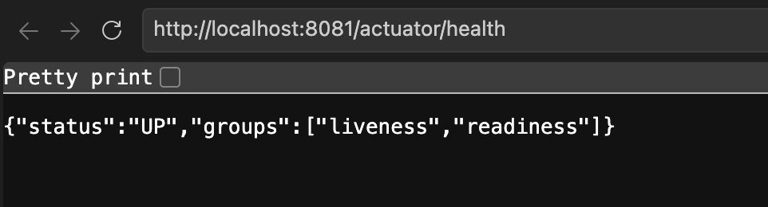
/actuator/health returns UP.